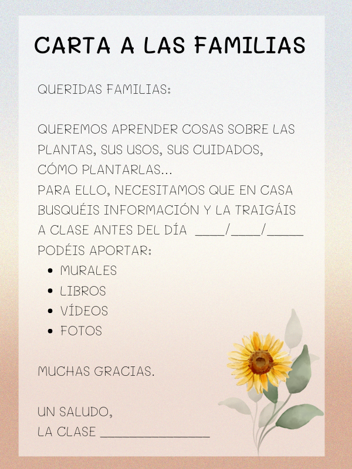

Nos ponemos a investigar
Investigamos en casa
No solo aprendemos en el colegio; en casa nos enseñan muchas otras cosas y, si les pedimos ayuda, seguro que les encantará participar en nuestro proyecto. Por eso, escribimos una carta a las familias solicitando que nos ayuden a encontrar información relacionada con las plantas o el vivero en casa.
